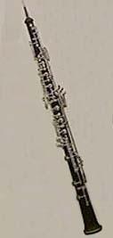

|
 | The Oboe
The oboe is a soprano-range, double-reed woodwind instrument of length 62 cm. Its wooden tube is distinguished by a conical bore expanding at the end into a flaring bell. The modern oboe's range extends from the B-flat below middle C (B3-flat) to the A nearly three octaves higher (A6). Sounding a fifth below the oboe is the English horn and the bass member of this family is the bassoon.
A melodic instrument capable of very gentle, expressive passages, the instrument is yet said to take a large amount of air to play. The range of pressure between the softest and loudest sounds is rather small, so careful control of the pressure on the reed is necessary.
|
Traditionally made from African Blackwood, also called grenadilla, the instrument is made in three parts. The top joint has 10 or 11 holes, most of which are manipulated by the player's left hand. The bottom joint also has 10 holes, for most of which the player uses the right hand. The bell section has two holes, covered with keys, which are not often used by the player. Oboes are still hand made by expert craftsmen who are very secretive about the dimensions, size of aperture, etc. used in the construction. The double reed is fashioned from cane which is grown on the east coast of Spain or the south of France, which is usually dried and aged for several years. The careful fashioning of the double reed is a key part of getting a fine musical sound from the instrument.
Thanks to Liz McKeown for helping to demonstrate the instrument.
|
Index
Woodwind instruments
Musical instruments |